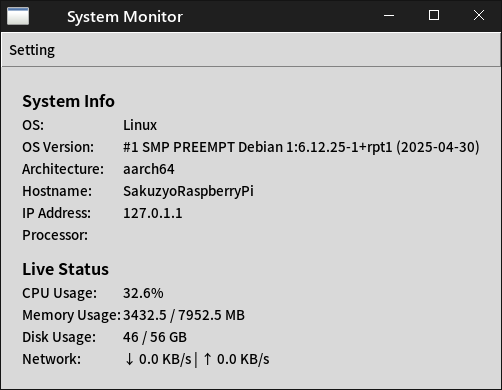

System Monitor
English pageSystem Monitor は システムの情報をわかりやすく教えてくれるアプリ
高速な動作を特徴としています
主な機能
- OSの情報やバージョンを表示
- CPU使用率やメモリの情報を表示
- 簡易的なOSの情報などを表示
- プロセスの一覧を表示
== OS Info ==
== Process Info ==
使用方法
1. Pythonをインストール
(Win:MSStoreで「python」と検索し、お好きなものをインストール(絶対バージョン3以上) Mac:brew install python Linux: sudo apt install python)
2. コンソール(コマンドプロンプト)でダウンロードフォルダに移動(cd Downloads で可能)し、「python3 os_info.py」もしくは「python3 process_info.py」と打てば起動します
3. GUI(ウィンドウ)モードで起動したい場合は「[起動したいpyファイル] --gui」、更新間隔を変更したい場合は「[起動したいpyファイル] --interval [秒数]」とします
※もし「No module named 'ライブラリの名前'」と出た場合
1. pip install ライブラリの名前 とすると使えるようになります
スクリーンショット

作者：削除くん
ライセンス：フリーソフト（個人利用可）
OS Infoソースコード
Process Infoソースコード
Ver.1.00